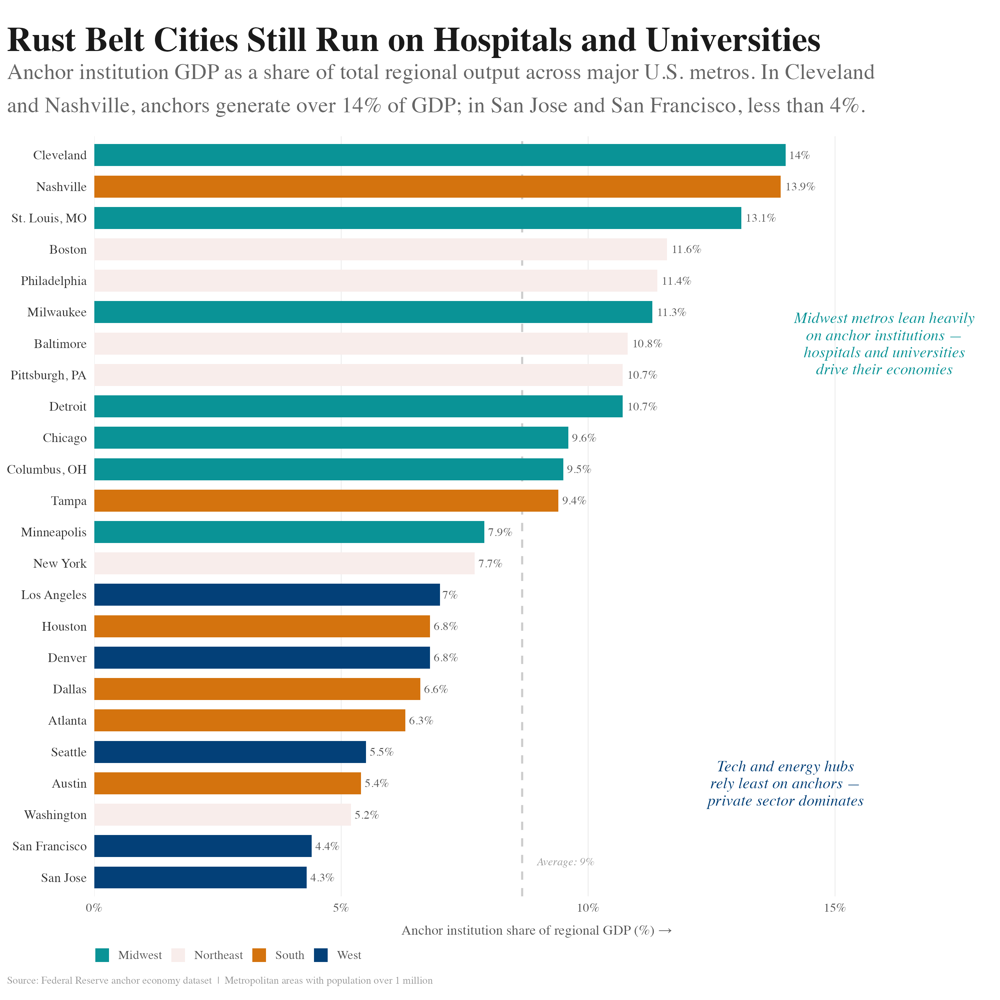

Ranked bars · Regional economies
Rust Belt cities still run on hospitals and universities
Anchor institutions are the places that cannot leave town. In Cleveland they are 14% of the economy. In San Jose, four.

Two sentences sit inside the panel, one by the teal, one by the navy. Between them you learn what the colors mean, without leaving the chart.
What the chart does
- Sorted, so the ranking carries the eye.
- Colored by region, four groups with a job to do.
- A dashed line at 9% gives every bar something to sit against.
- Numbers at the bar ends, so nobody measures.